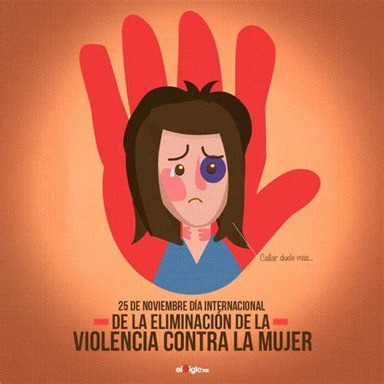
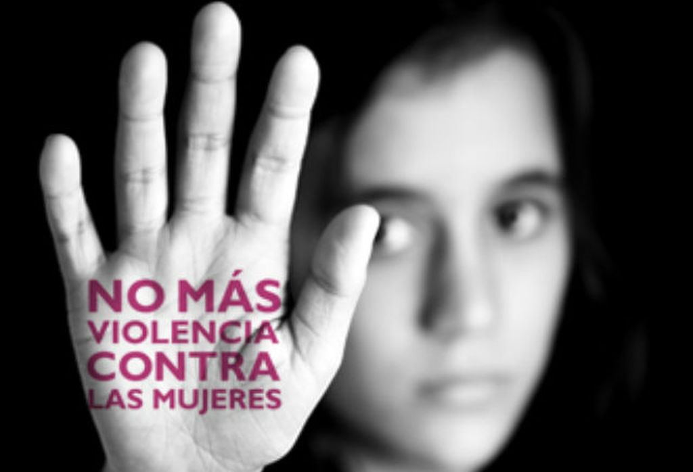

Las Naciones Unidas definen la violencia contra la mujer como «todo acto de violencia de género que resulte, o pueda tener como resultado un daño físico, sexual o psicológico para la mujer, inclusive las amenazas de tales actos, la coacción o la privación arbitraria de libertad, tanto si se producen en la vida pública como en la privada». (1) La violencia de pareja se refiere a los comportamientos de la pareja o expareja que causan daño físico, sexual o psicológico, incluidas la agresión física, la coacción sexual, el maltrato psicológico y las conductas de control.
Las estimaciones más precisas sobre la prevalencia de la violencia de pareja y la violencia sexual son las obtenidas mediante encuestas poblacionales basadas en el testimonio de las supervivientes. Según un análisis de los datos sobre la prevalencia de este problema en 161 países y zonas entre 2000 y 2018, realizado en 2018 por la OMS en nombre del Grupo de Trabajo interinstitucional de las Naciones Unidas sobre la violencia contra la mujer, en todo el mundo, casi una de cada tres mujeres (un 30%) ha sufrido violencia física y/o sexual por su pareja o violencia sexual por alguien que no era su pareja o ambas (2). Más de una cuarta parte de las mujeres de entre 15 y 49 años que han tenido una relación de pareja han sido objeto de violencia física y/o sexual de pareja al menos una vez en su vida (desde los 15 años). Las estimaciones sobre la prevalencia de la violencia de pareja sufrida a lo largo de la vida van del 20% en la Región del Pacífico Occidental de la OMS, 22% en los países de ingresos elevados y la Región de Europa de la OMS y 25% en la Región de las Américas de la OMS, al 33% en la Región de África de la OMS, 31% en la Región del Mediterráneo Oriental de la OMS y 33% en la Región de Asia Sudoriental de la OMS. A nivel mundial, hasta el 38% de los asesinatos de mujeres son cometidos por su pareja. Además de la violencia de pareja, el 6% de las mujeres de todo el mundo refieren haber sufrido agresiones sexuales por personas distintas de su pareja, aunque los datos al respecto son más limitados. La violencia de pareja y la violencia sexual son perpetradas en su mayoría por hombres contra mujeres. Los confinamientos durante la pandemia de COVID-19 y sus repercusiones sociales y económicas han aumentado la exposición de las mujeres a parejas con comportamientos abusivos y a factores de riesgo conocidos, al tiempo que han limitado su acceso a diferentes servicios. Las situaciones de crisis humanitarias y desplazamientos pueden agravar la violencia, como la violencia de pareja y la violencia sexual por terceros, y dar lugar a nuevas formas de violencia contra las mujeres.
La violencia de pareja (física, sexual y psicológica) y las agresiones sexuales provocan en las mujeres graves problemas de salud física, mental, sexual y reproductiva a corto y largo plazo. También afectan a la salud y el bienestar de sus hijos. Este tipo de violencia genera un elevado costo social y económico para las mujeres, sus familias y la sociedad. Esta violencia puede: Tener consecuencias mortales, como el homicidio o el suicidio. Producir lesiones: el 42% de las mujeres víctimas de violencia de pareja refieren alguna lesión a consecuencia de dicha violencia (3). Ocasionar embarazos no deseados, abortos provocados, problemas ginecológicos e infecciones de transmisión sexual, entre ellas la infección por el VIH. El estudio de la OMS de 2013 sobre la carga para la salud asociada con la violencia contra las mujeres reveló que las mujeres que han sufrido maltratos físicos o abusos sexuales tienen una probabilidad 1,5 veces mayor de padecer infecciones de transmisión sexual, incluida la infección por el VIH en algunas regiones, en comparación con las mujeres que no habían sufrido violencia de pareja. Por otra parte, también tienen el doble de probabilidades de sufrir abortos (3). La violencia de pareja durante el embarazo está asociada con un aumento en la probabilidad de abortos involuntarios, muertes fetales, partos prematuros y bebés con bajo peso al nacer. El mismo estudio de 2013 puso de manifiesto que las mujeres víctimas de violencia de pareja tenían un 16% más de probabilidades de sufrir un aborto involuntario y un 41% más de probabilidades de tener un parto prematuro (3). Estas formas de violencia pueden ser causa de depresión, estrés postraumático y otros trastornos de ansiedad, insomnio, trastornos alimentarios e intentos de suicidio. Según el análisis de 2013, las mujeres que han sufrido violencia de pareja tienen casi el doble de probabilidades de padecer depresión y problemas con la bebida. Entre los efectos sobre la salud también se encuentran las cefaleas, los síndromes de dolor (de espalda, abdominal o pélvico crónico), trastornos gastrointestinales, limitaciones de la movilidad y mala salud general. La violencia sexual, sobre todo en la infancia, también puede incrementar el consumo de tabaco y drogas, así como las prácticas sexuales de riesgo. También se asocia a la comisión (por el hombre) y el padecimiento (por la mujer) de actos de violencia.
Gracias a evaluaciones bien diseñadas, cada vez se tienen más pruebas sobre las soluciones que mejor previenen la violencia contra las mujeres. En 2019, la OMS y ONU-Mujeres, con el respaldo de otros 12 organismos bilaterales y de Naciones Unidas, publicaron RESPECT women, un marco para prevenir la violencia contra la mujer dirigido a las instancias normativas. Cada letra de la palabra RESPECT corresponde (en inglés) a una de sus siete estrategias: Fortalecimiento de las habilidades de relación (Relationship skills strengthening); Empoderamiento de las mujeres (Empowerment of women); Servicios garantizados (Services ensured); Reducción de la pobreza (Poverty reduced); Creación de entornos propicios (escuelas, lugares de trabajo, espacios públicos) (Enabling environments); Prevención del abuso infantil y adolescente (Child and adolescent abuse prevented), y Cambio de actitudes, creencias y normas (Transformed attitudes, beliefs and norms).